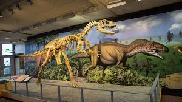

Dinosaurusi su bili raznovrsna grupa gmizavaca koji su živeli na Zemlji tokom mezozojske ere, pre oko 230 do 65 miliona godina. Tokom tog perioda razvile su se hiljade različitih vrsta, koje su se razlikovale po veličini, načinu ishrane i načinu kretanja – od malih, brzorastućih biljojeda do ogromnih mesoždera poput tiranosaurusa. Većina dinosaurusa je izumrla krajem krede, najverovatnije usled udara asteroida, ali se veruje da su današnje ptice direktni potomci jedne grane dinosaurusa. Danas ih proučavamo kroz fosile, koji nam pomažu da saznamo više o evoluciji života na Zemlji.
